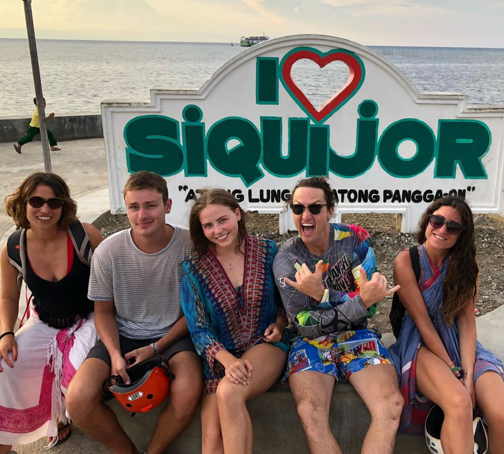

Community
Your People
Nobody gets sober alone and nobody stays sober alone. The good news is that "community" covers a lot more than a circle of chairs.
Meetings are the most accessible free fellowship there is, and for a lot of us they were the way in. But rooms can be daunting when everyone in them has decades on you. Some people find their community on a mat, in the surf or at the bottom of a climbing wall first, and find the rooms later, or alongside. All of it counts.
- Find Your RoomSix questions to find the kind of support that fits you.
- Find Your CrewA directory of groups, online rooms and clubs where you connect by doing.
- Crew PactStart a challenge, send a mate the link, tick the days off together.
- StoriesRead one. Then add yours for whoever is where you were.
- For families and friendsWhat helps, what backfires, and where to get support of your own.
Talk to people now
The Sober Mindset group chat is open: our community chat. Moderated, friendly, and you can use any name you like.
Three ways to start this week
- Go to one thing. A meeting, a class, a club session. Once. You're collecting information.
- Go back to the same thing. Community is made of repeat visits. By the third time, people know your name.
- Bring someone. Start a Crew Pact and send the link to one mate. Two people doing a thing is already a crew.